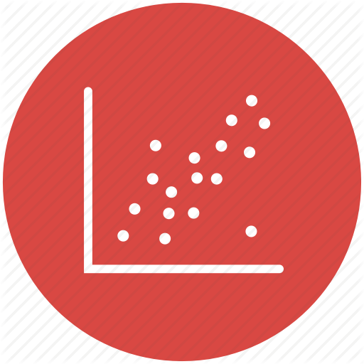
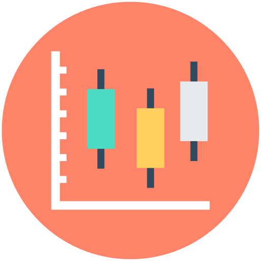
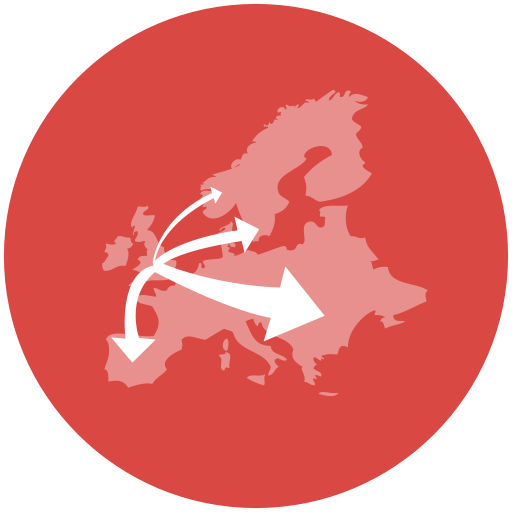

<main>
	<h2>Distribución</h2>
	<h3>Una variable (Gráficos recomendados)</h3>
	<section class="charts">
				<article>
					<a href="histograma-linea.html">
					<h3>Histograma de Línea</h3></a>
				</article>
				<article>
					<a href="histograma.html">
					<h3>Histograma</h3></a>
				</article>
	</section>
	<h3>Dos Variables o más (Gráficos recomendados)</h3></a>
	<section class="charts">
		<article>
					<a href="grafico-dispersion.html">
					<h3>Gráfico de Dispersión</h3></a>
				</article>
				<article>
					<a href="grafico-caja-bigote.html">
					<h3>Caja y Bigote</h3></a>
				</article>
				<article>
					<a href="grafico-burbuja.html">
					<h3>Gráfico de Burbuja</h3></a>
				</article>
				
	</section>
	<h3>Utilizando Mapas Geográficos (Gráficos recomendados)</h3>
	<section class="charts">
		
				<article>
					<a href="mapa-flujo.html">
					<h3>Mapa Flujo</h3></a>
				</article>
				<article>
					<a href="mapa-conexiones.html">
					<h3>Mapa Conexiones</h3></a>
				</article>
				<article>
					<a href="mapa-puntos.html">
					<h3>Mapa de puntos</h3></a>
				</article>
	</section>

</main>
